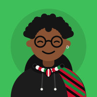

Your plan · 5 questions · about 2 minutes
Let's make your plan.
Your commitment: no weed. Nobody sees these answers but you.

Your plan · 5 questions · about 2 minutes
Your commitment: no weed. Nobody sees these answers but you.
